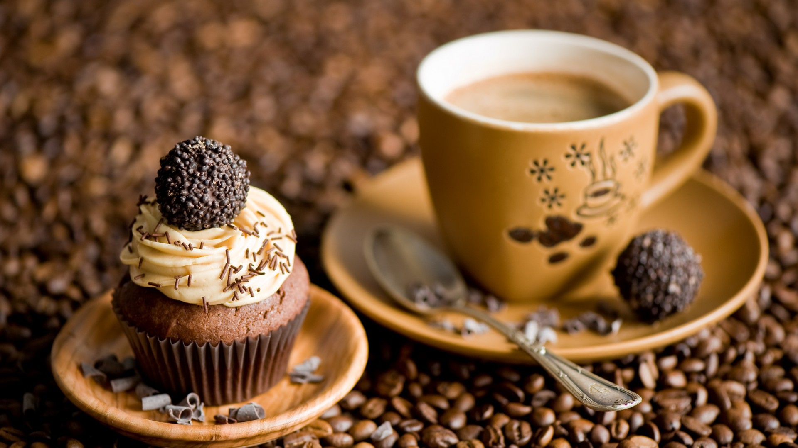

Почти все о кофе ... Капучино .

Классический рецепт
Вариант 1
Требуется (на две порции): 1 стакан кофе эспрессо, 8 ст. л. молока, 40 г темного шоколада, корица.
Способ приготовления. Половину всего молока нагрейте, но не доводите до кипения. А вторую половину взбейте в тугую пену. Лучше всего использовать цельное молоко и ни в коем случае не восстановленное. Шоколад натрите на мелкой терке. Чтобы облегчить этот процесс, шоколад предварительно подержите в холодильнике.
Капучино подают в больших специальных чашках. В такую чашку налейте кофе эспрессо, в него добавьте горячее молоко. Сверху выложите молоко, взбитое в пену. Затем посыпьте тертым шоколадом и корицей.
Кофе и здоровье
Тем не менее слухи о том, что кофе обладает некоторым противозачаточным эффектом, не лишены основания. Важно только правильно понять суть этого изыскания ученых. Американские медики пришли к выводу, что женщины, употребляющие более четырех чашек напитка в день, беременеют реже, чем те, кто не пьет его вовсе.
Вариант 2
Требуется: 1,5 стакана молока, 3 ст. л. сахара, 2 ст. л. сливок, 1/3 стакана крепкого черного кофе.
Способ приготовления. Молоко смешайте с сахаром и доведите до кипения. Для этого лучше использовать эмалированную посуду или кастрюльку с тефлоновым покрытием, чтобы молоко не пригорело. Как только оно закипит, снимите его с огня и добавьте сливки. Энергично перемешайте, но не взбивайте. В молоко долейте кофе и перемешайте. Напиток разлейте в маленькие классические кофейные чашки.
Кофейные советы
Если вы любите кофе с ликером, но в ваши планы не входит прием спиртных напитков, воспользуйтесь различными видами ароматизированного кофе. Такие сорта имеют запах и привкус ваших любимых напитков, но не содержат ни капли алкоголя.
Вариант 3
Требуется (на две порции): 1 стакан кофе эспрессо, 1/2 стакана молока, 30 г сахара, желток, 1 ч. л. взбитого белка.
Способ приготовления. Молоко доведите до кипения, добавьте в него кофе эспрессо. И снимите с огня. Всыпьте сахар и, накрыв крышкой, дайте постоять 15 минут.
Взбейте желток вместе с белком. Кофе с молоком процедите для удаления пены. Смешайте компоненты. Приготовьте паровую баню. Для этого в большую кастрюлю налейте немного воды и поставьте на огонь, чтобы вода закипела. В воду поместите небольшую подставочку, чтобы она возвышалась над поверхностью. Получившийся напиток разлейте в чашки и поставьте на паровую баню на 30 минут.
Из жизни великих
Александр Сергеевич Грибоедов был замечательным писателем, прекрасным композитором, но, помимо этого, и выдающимся дипломатом. Часто по делам службы ему приходилось бывать в Турции, где кофе уже давно считался национальным напитком, хотя никогда там не выращивался. Именно здесь Грибоедов пристрастился к напитку из «плодов вечной бодрости» и в дальнейшем всегда пил только его.
Капучино пряный
Требуется: 2 стакана кофе эспрессо, 4 ст. л. молока, 200 г темного шоколада, 1 ч. л. корицы, 10 г сахарной пудры.
Способ приготовления. Перед приготовлением эспрессо добавьте в молотые зерна корицу. Растопите шоколад, нагрейте молоко, но не доводите его до кипения. Осторожно влейте шоколад в кофе, затем добавьте подогретое молоко. Кофе украсьте тертым шоколадом и сахарной пудрой.
Капучино с мороженым
Требуется: 1 стакан эспрессо, по 1 ст. л. шоколадного сиропа, сливок и мускатного ореха, 1/2 ч. л. корицы, 2 ст. л. сливочного мороженого.
Способ приготовления. Перед приготовлением эспрессо добавьте в молотые зерна корицу и мускатный орех. Влейте шоколадный сироп, затем украсьте напиток взбитыми сливками и мороженым.
Гадание на кофейной гуще
Если в кофейной гуще видно изображение сигареты, это предвещает пустые траты денег. Вполне возможно, что на ветер будет брошена очень крупная сумма. А потом последуют сожаление и угрызения совести. Чтобы предотвратить это, нужно не следовать советам других относительно ваших денежных средств.
Капучино охлажденный
Требуется: 1 стакан эспрессо, по 1 ст. л. шоколадного мороженого, сливок и сливочного мороженого, 1 ч. л. какао.
Способ приготовления. В кофе всыпьте порошок какао и тщательно размешайте. В охлажденный эспрессо положите половину сливочного и шоколадного мороженого, подождите, чтобы оно растаяло. Сверху украсьте напиток взбитыми сливками.
Кофейные советы
Обратите внимание на качество зерен, из которых вы собираетесь готовить напиток. Не используйте недозрелые зерна. Вы узнаете их по наличию кожуры или мягкости. Использование старых зерен, тех, которые были давно собраны или давно обжарены, лишает кофе его специфического вкуса и аромата.
Капучино шоколадный
Требуется: 1 стакан эспрессо, 20 г темного шоколада, 1 ч. л. какао, 1 ст. л. шоколадного мороженого, 10 г сахарной пудры.
Способ приготовления. Растопите шоколад, осторожно влейте его в кофе, затем добавьте какао-порошок. Охладите кофе и сверху положите мороженое. Украсьте сахарной пудрой.
Капучино белый
Требуется: 1/2 стакана эспрессо, 2 дольки белого шоколада, 3 ст. л. молока, 1 ст. л. взбитых сливок, 10 г сахарной пудры, 1,5 ст. л. сливочного мороженого.
Способ приготовления. Растопите шоколад, нагрейте молоко, не доводя его до кипения. Осторожно влейте шоколад в кофе, затем добавьте подогретое молоко. Кофе украсьте взбитыми сливками, положите сверху мороженое и посыпьте напиток сахарной пудрой.
Из жизни великих
Уинстон Черчилль начинал свой день с маленькой чашечки крепкого кофе. По его мнению, этот напиток помогает предвидеть, что произойдет завтра, и объяснить, почему этого не произошло.
Капучино с коньяком
Требуется: 1/2 стакана эспрессо, 2 дольки белого шоколада, 1 ст. л. взбитых сливок, 2 ч. л. коньяка, 10 г сахарной пудры, долька черного шоколада.
Способ приготовления. Растопите белый шоколад, осторожно влейте его в кофе, затем взбитые сливки и коньяк. Черный шоколад натрите на терке и вместе с сахарной пудрой посыпьте им готовый напиток.
Гадание на кофейной гуще
Если в кофейной гуще просматривается изображение ручного зеркальца, это означает знакомство с новым человеком. И новый знакомый (или знакомая) окажется очень приятным человеком. Но если просматривается треснутое зеркало – новый знакомый (или знакомая) коварный человек.
Капучино жгучий
Требуется: 1 стакан эспрессо, 1 ст. л. молока, 2 ч. л. коньяка, 1/2 ч. л. корицы, семя гвоздики, 1/4 ч. л. кориандра, 2 горошины черного перца, 10 г сахарной пудры.
Способ приготовления. Перед приготовлением эспрессо положите в молотые зерна корицу, гвоздику, кориандр и горошины черного перца. Подогрейте молоко, осторожно влейте его в кофе, затем добавьте коньяк. Готовый напиток украсьте сахарной пудрой.
Гадание на кофейной гуще
Если в кофейной гуще появляется рюмка, похоже, либо сам гадающий, либо кто-то из его окружения будет страдать от алкоголизма. Если есть возможность, надо постараться предотвратить подобную беду. А если такое уже случилось и человек болен алкоголизмом, немедленно нужно заставить его лечиться. Иначе ситуация выйдет из-под контроля.
Капучино с карамелью
Требуется: 1 стакан эспрессо, 2 ст. л. молока, 2 ч. л. коньяка, по 1 ст. л. карамели и сливок, 1/2 ч. л. корицы, 10 г сахарной пудры.
Способ приготовления. Перед приготовлением эспрессо добавьте в молотые зерна корицу. Подогрейте молоко, осторожно влейте его в кофе, затем – коньяк. Карамель растопите на медленном огне, положите в кофе. Готовый напиток украсьте сахарной пудрой и взбитыми сливками.
Гадание на кофейной гуще
Если в кофейной гуще прорисовывается изображение дракона, это означает неожиданную опасность вследствие быстрого обогащения. Человек стремится к богатству, комфорту и роскоши, но в этом своем стремлении он переступает какую-то черту, и это приводит его к огромным неприятностям. Так что в данный момент нужно особенно осторожно относиться к любым путям скорейшего обогащения.
Капучино пьяный
Требуется: 1 стакан эспрессо, 2 ст. л. молока, 2 ч. л. водки, 1/4 ч. л. корицы, 1 ст. л. апельсинового сока, 10 г сахарной пудры.
Способ приготовления. Перед приготовлением эспрессо добавьте в молотые зерна корицу. Подогрейте молоко, осторожно влейте его в кофе, затем добавьте водку, апельсиновый сок. Готовый напиток украсьте сахарной пудрой.
Из жизни великих
Джейн Сеймур, снимающаяся в телесериале «Доктор Куин, женщина-врач» вот уже почти четыре года, что называется, «вошла в роль». Медициной актриса увлекается уже давно – она, как аптекарь с опытом, разбирается в лекарствах и может поставить несложный диагноз. К кофе относится, как к великолепному тонизирующему напитку, отмечая, что он очень помогает ей во время съемок.
Капучино горький
Требуется: 1/2 стакана эспрессо, по 1 ст. л. сливок и какао, 3 дольки горького шоколада.
Способ приготовления. В эспрессо добавьте сливки и порошок какао, все тщательно перемешайте. Шоколад растопите на медленном огне, осторожно влейте его в кофе, охладите. По желанию готовый напиток можете украсить сахарной пудрой.
Капучино любимый
Требуется: 1 стакан кофе эспрессо, 1 ст. л. молока, 2 ч. л. коньяка, 1/2 ч. л. корицы, 1 ч. л. кокосовой стружки, 2 дольки молочного шоколада, 10 г сахарной пудры.
Способ приготовления. Перед приготовлением эспрессо добавьте в молотые зерна корицу. Подогрейте молоко, осторожно влейте его в кофе, затем – коньяк. Молочный шоколад растопите и положите туда же. Готовый напиток украсьте сахарной пудрой.
Гадание на кофейной гуще
Если в кофейной гуще вы сумели разглядеть изображение русалки, ждите коварства от людей из вашего окружения. Они хотят обвести гадающего вокруг пальца, поэтому ему нужно быть очень внимательным и осторожным.